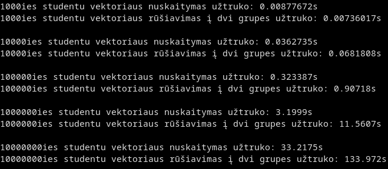
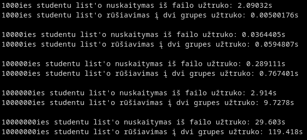
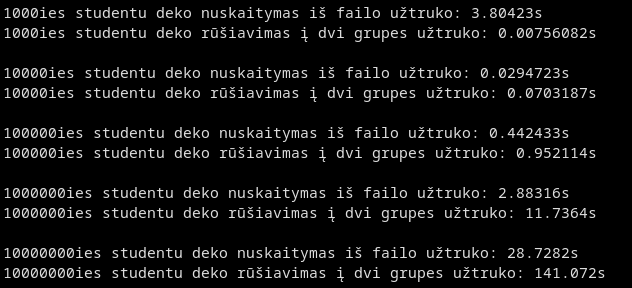
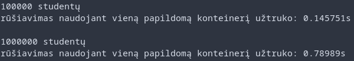
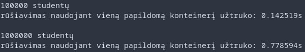
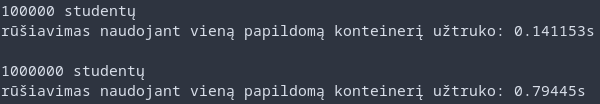

Ši programa aprašo studentų klasę. Leidžia kurti studentus, įvesti namų darbų ir egzaminų pažymius, skaičiuoti galutinius pažymius. Priklausomai nuo versijos leidžia paleisti įvairius testus matuojančius programos veikimo spartą naudojant vektorius, listus, dekus ir struktūras bei klases.
Versija 2.0
Šioje programos versijoje pridėjau dokumentaciją ir unit testus
Kaip parunnint
Changelog
v0.1 (22/02/2022)
- Implementuota naudojant dinaminius C masyvus ir vektorius v0.2 (06/03/2022)
- Pridėta galimybė nuskaityti studentus iš failo
- Outpute studentai yra surikiuojami pagal pavardes v0.3 (06/03/2022)
- Pridėtas exception'ų checkinimas atidarinėjant failą
- Kodas jau buvo splittintas į headerį, metodų source'ą ir main source failą
- Kode jau buvo naudojamos struktūros v0.4 (05/04/2022)
- Pridėjau galimybę sugeneruoti studentų failus automatiškai
- Programa sugeneruoja 5 studentų failus, surušiuoja pagal pažymius ir pagal tai įšveda į du skirtingus failus
- Visi testai matuojami ir yra išvedama kiek kas laiko užėmė v0.5 (06/04/2022)
- Implementuotas testas tikrinantis duomenų nuskaitymą iš failų ir rūšiavimą į dvi kategorijas naudojant vektorių, listą ir deką



v1.0 (17/04/2022)
- Ši versija matuoja kaip skiriasi studentų rušiavimas į dvi grupes naudojant vieną naują/du naujus konteinerius naudojant vektorių, list'ą arba dek'ą v1.1 (30/04/2022)
- Pereita prie klasių vietoj struktūrų
- Palyginau programos veikimo spartą naudojant struktūras ir klases ir runninant testus su vektoriais ir 100000 ir 1000000 studentų failais
Struktūros

Klasės
- Palyginau testų spartą naudojant O1, O2 ir O3 kompiliatoriaus optimizavimo flagus
OP1

OP2

OP3

v1.2 (08/05/2022)
- Pridėjau 'rule of three' konstriuktorius ir << ir >> operatorius studentų klasei
- Pridėjau porą meniu punktų demonstruojančių įvedimą ir išvedimą naudojant << ir >> operatorius
v1.5 (11/05/2022)
- Parašiau abstrakčią klasę Human iš kurios dabar paveldėja Student
v2.0 (11/05/2022)
- Pridėjau doxygen dokumentaciją